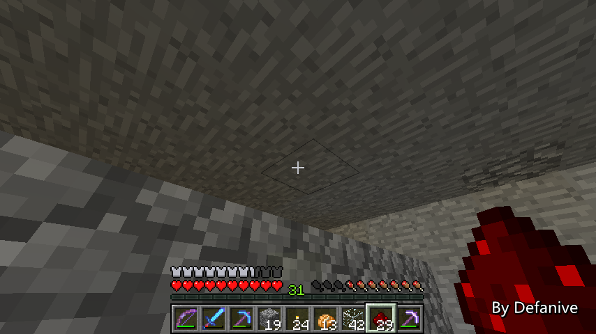

首页
上一页
254
255
256
257
258
259
259
260
261
262
263
264
下一页
末页
defanive2
无尽黑夜
14
正在挖掘一个比较大的空间进行甘蔗场的建设
预计大小为15x7的种植面积，8格高度
PS 对比其他的自动甘蔗场设计
面积利用率决定是非常高的
但是由于高度为8，空间利用率不一定最高
不过也相对非常可观
——来自 MCLive
19386楼
2013-07-25 23:13
defanive2
无尽黑夜
14
火把圈起来的四方形15x7区域将会都种满甘蔗
下方和右侧留的2格宽走廊只是为了迎合地下室9x9的设计
PS 其实为什么是15x7呢
这个是电路布置上面积最大化的设计
不过电路要过会才能看到
——来自 MCLive
19387楼
2013-07-25 23:18
defanive2
无尽黑夜
14
往下挖的时候遇到了一个天然洞
不过已经被探过了，很安全
——来自 MCLive
19388楼
2013-07-25 23:22
defanive2
无尽黑夜
14
挖掘工程仍然在进行中
15x7x8也是相对比较大的工程，也不是几分钟就能完成的
不过有钻石稿效率V+挖掘效率II的帮助下进行得挺顺利
PS 当初在家的beacon设置为挖掘效率II
目的也是为了加速以后家附近工程的施工速度
看起来选择得没错
——来自 MCLive
19391楼
2013-07-25 23:30
defanive2
无尽黑夜
14
终于挖好了15x7x8的空间了
不知道大家是否喜欢这种地下室为主体的房屋设计
个人觉得最大好处就是永远不用担心各种装置没有位置放
新工程需要空间就往下挖即可
——来自 MCLive
19395楼
2013-07-25 23:40
defanive2
无尽黑夜
14
接下来就马克一下水源的位置
同样是和沙漠的甘蔗场一样的排布
这样可以保证每个位置都能种甘蔗
PS 发了好多次都没发出去
——来自 MCLive
19399楼
2013-07-26 00:03
defanive2
无尽黑夜
14
接下来需要检测铁轨一堆
——来自 MCLive
19401楼
2013-07-26 00:07
defanive2
无尽黑夜
14
然后在正下方铺满铁轨
这些铁轨将会是给漏斗矿车运行的轨道
漏斗矿车会收集掉落的甘蔗
——来自 MCLive
19402楼
2013-07-26 00:11
defanive2
无尽黑夜
14
用漏斗矿车试运行一次之后非常顺利
整个轨道可以把全部面积都覆盖到，并且回到起点
收集装置就此完成了
接下来就要开始铺种植甘蔗的草地了
PS 甘蔗和草地配起来真的很好看
而且特别喜欢蘑菇岛biome的草地颜色
非常的绿，油绿的那种颜色
——来自 MCLive
19404楼
2013-07-26 00:17
defanive2
无尽黑夜
14
接下来需要一些草地，自然是外出采集比较方便了
——来自 MCLive
19405楼
2013-07-26 00:18
defanive2
无尽黑夜
14
采集了草地之后用泥土补种上
PS 虽然说草地可以繁殖
但是也是不可再生资源
因为草地繁殖需要泥土，而泥土也是不可再生的
虽然说世界的泥土数量非常丰盛
但是也是一个名副其实的不可再生资源 = =
——来自 MCLive
19406楼
2013-07-26 00:22
defanive2
无尽黑夜
14
其实不可再生资源的概念是指在限定的地图范围内
某种资源是否可以无限获取
MC里面的绝大部分资源都可以通过扩展地图而无限获取
钻石就是一个不可再生资源，之前也说过了
一个chunk里面就只有这么多钻石，挖完用完就没了
——来自 MCLive
19407楼
2013-07-26 00:29
defanive2
无尽黑夜
14
接下来就是进行草地的铺设了
铺设的同时也要把铁块给取出
之后会换成水源
——来自 MCLive
19409楼
2013-07-26 00:36
defanive2
无尽黑夜
14
草地已经铺设完毕了
现在要保证草不会消失，所以要插上火把
——来自 MCLive
19411楼
2013-07-26 00:40
defanive2
无尽黑夜
14
接下来下一步就比较危险了
要在水源处铺上冰，并且用玻璃盖上
因为水源正下方是铁轨，因此不能直接铺水
要铺冰之后用光源把冰融化
——来自 MCLive
19412楼
2013-07-26 00:45
defanive2
无尽黑夜
14
当冰接受到的非天顶亮度大于12时
就会有几率融化
虽然说一放下去就融化的几率不大，不过还是有可能的
——来自 MCLive
19413楼
2013-07-26 00:48
defanive2
无尽黑夜
14
完成了全部水源的铺设
接下来就要小心不要对水源产生任何更新了
否则的话就前功尽弃
——来自 MCLive
19414楼
2013-07-26 00:50
defanive2
无尽黑夜
14
接下来把外面简单装潢一次
同时也要非常小心不要对水产生任何更新
同时也把埋在墙面下的水源给铺设好
——来自 MCLive
19417楼
2013-07-26 00:58
defanive2
无尽黑夜
14
接下来就是非常惊心动魄的一步了
用漏斗矿车沿着轨道跑一圈
由于有动力铁轨和激活铁轨会产生更新
如果铺设错误的话整个工程就要重新来过了
如果能正常的运行一圈回来，那么说明没有任何铺设问题
——来自 MCLive
19418楼
2013-07-26 01:00
defanive2
无尽黑夜
14
非常顺利的运行了几次，说明没有铺设错误
那么整个工程最心惊胆战的部分就完成了！
PS 这样铺设水源是其中一种方法
我和繁华也一起共同设计了另外一种铺设矿车轨道的路线
可以收集所有的甘蔗，但不需要使用冰
——来自 MCLive
19419楼
2013-07-26 01:02
defanive2
无尽黑夜
14
接下来加高玻璃柱并放上萤石作为光源
替代临时火把
——来自 MCLive
19421楼
2013-07-26 01:08
defanive2
无尽黑夜
14
105个甘蔗，自然也需要105个活塞作为破坏
PS 这个设计的活塞用量已经到达了1:1的比例
相对所有现有的设计，非常的低了
——来自 MCLive
19422楼
2013-07-26 01:12
defanive2
无尽黑夜
14
接下来需要在此处设置一个BUD电路
由于布线需要，用到了
@yuank5121
的一个BUD设计
——来自 MCLive
19423楼
2013-07-26 01:17
defanive2
无尽黑夜
14
接下来就需要大批量的铺上活塞了
活塞除了作为破坏甘蔗的工具，同时也是一个BUD
与其他旧设计不同，BUD和破坏集成在同一个活塞中
非常的节省资源
——来自 MCLive
19425楼
2013-07-26 01:20
defanive2
无尽黑夜
14
完成所有活塞铺设之后，看起来挺漂亮的
——来自 MCLive
19426楼
2013-07-26 01:22
defanive2
无尽黑夜
14
接下来就来旧的甘蔗场收一点甘蔗
铺到新的甘蔗场
——来自 MCLive
19427楼
2013-07-26 01:23
defanive2
无尽黑夜
14
如果水源铺设没问题的话
应该是每一块草地都可以放上甘蔗的
——来自 MCLive
19428楼
2013-07-26 01:25
defanive2
无尽黑夜
14
所有甘蔗都正常铺上，非常成功
说明水源铺设没有问题
PS 其实建造的时候一直在担心会不会意外铺错
或者水源意外被更新
看起来今天的建造非常成功
——来自 MCLive
19429楼
2013-07-26 01:27
defanive2
无尽黑夜
14
接下来就把BUD的输出连接到下面的活塞
这样下面的活塞就形成了BUD
每当活塞收到更新，也就是甘蔗长成的时候
活塞就会下推，把甘蔗破坏
并且一系列活塞一直更新到主BUD电路的活塞，重设BUD
——来自 MCLive
19430楼
2013-07-26 01:31
defanive2
无尽黑夜
14
铺红石的时候可以对着天花板来放
这样就免去了向上跳到麻烦
——来自 MCLive

19431楼
2013-07-26 01:32
首页
上一页
254
255
256
257
258
259
259
260
261
262
263
264
下一页
末页